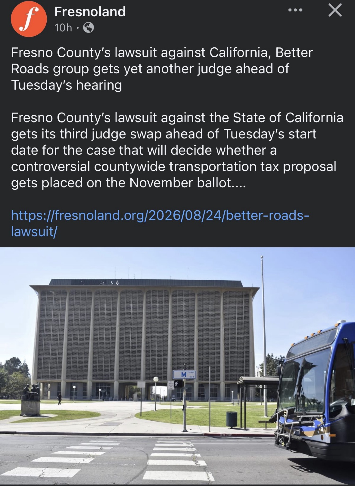
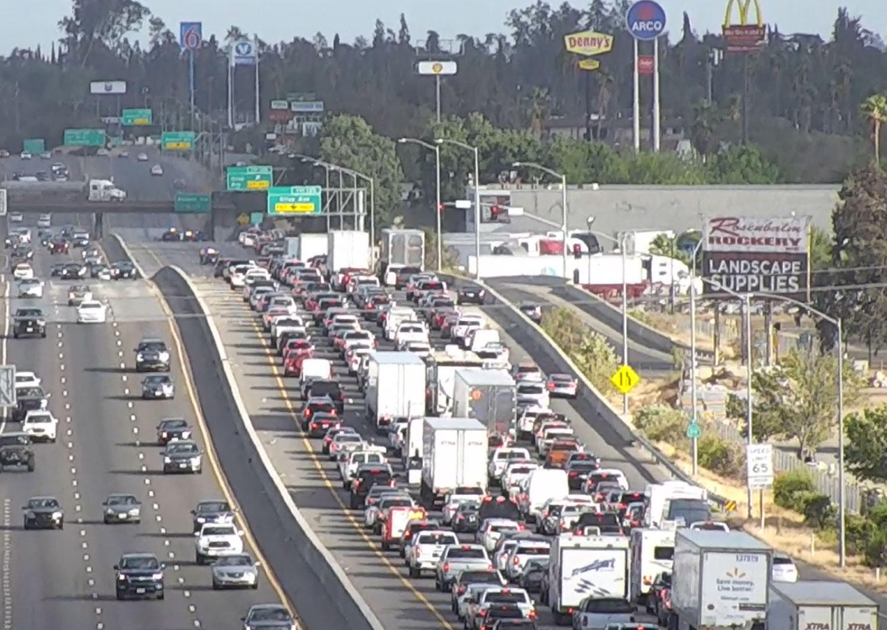

The Judicial Musical Chairs
Fresno County’s lawsuit against the State of California — and the proponents of the Better Roads, Safe Streets ballot initiative — has now burned through three judges in roughly ten days. According to reporting by Pablo Orihuela at Fresnoland published August 24, 2026, Judge Lisa Gamoian became the latest to be removed after a motion filed Friday by the Better Roads proponents. She followed Judges Robert Whelan and Virna Santos, both previously disqualified after motions from the opposing sides alleging connections that would prevent fair and unbiased handling of the case.
The new assignment is Fresno County Superior Court Judge Jonathan Skiles. The announcement came close enough to the Tuesday hearing that it remained unclear how either side viewed the selection. The hearing itself is the start of proceedings that will determine whether the controversial countywide half-cent transportation tax proposal reaches voters this November.

How We Got Here
The underlying dispute centers on AB 1923, an urgency statute co-authored by state Sen. Anna Caballero and Asm. Esmeralda Soria and signed by Gov. Gavin Newsom in early August 2026. The bill directed Fresno County elections officials to place the citizen-qualified Better Roads, Safe Streets initiative on the November 3, 2026 general election ballot, overriding a July 14 decision by a 3-2 majority of the Fresno County Board of Supervisors to schedule it for the March 2028 primary instead.
Supervisors Garry Bredefeld, Buddy Mendes, and Nathan Magsig had voted to order an economic impact study and delay placement, citing concerns that the measure was overly prescriptive about how funds must be spent. The citizen initiative, now commonly referred to as Measure S, had gathered sufficient signatures to qualify. It would renew and replace the existing Measure C half-cent sales tax (in place since the mid-1980s and set to expire June 30, 2027) and is projected to generate roughly $7.4 billion over 30 years, with approximately 65% directed to local streets and roads and 25% to public transportation.
On August 11–12 the Board voted 3-2 to authorize litigation. The county, joined by plaintiffs including former Fresno County Republican Party chair Fred Vanderhoof and businessman Mike Der Manouel Jr., filed suit against the State of California, County Clerk/Registrar of Voters James Kus, and the measure’s proponents (including Fresno Mayor Jerry Dyer, Clovis Councilmember Lynne Ashbeck, and others). The complaint seeks a temporary restraining order and preliminary injunction, arguing AB 1923 is an unprecedented override of local election timing authority and that any ruling must come before the September 9 ballot printing deadline to be meaningful.
Local Context for Tower District & Fresno Streets
Measure C has funded local road maintenance, transit, and safety projects across Fresno County for four decades. If it sunsets in mid-2027 without a replacement already generating revenue, cities and the county face projected multi-million-dollar annual shortfalls for street repairs and transit operations. For neighborhoods like the Tower District, delayed or interrupted funding streams translate directly into deferred pavement work, slower response to potholes, and pressure on already stretched local budgets. The November-versus-2028 timing debate is therefore not abstract procedure — it determines whether new dedicated revenue begins flowing before the old tax ends.
The Clock and the Stakes
Court documents and contemporaneous reporting establish that a ruling after the ballot materials go to the printer (variously cited around September 9, with some later correspondence suggesting earlier internal deadlines) would leave little practical room to alter the November ballot. That time pressure is precisely why the rapid succession of judicial disqualifications has drawn attention: each swap compresses the window for a decision on the temporary restraining order and the broader constitutional challenge to AB 1923.
Both the Attorney General’s office (representing the state) and the county/proponents have exercised their statutory right to one peremptory challenge of a judge. The third removal of Judge Gamoian came from the Better Roads side. The pattern underscores the intensity both camps attach to the outcome — local control of election calendars versus a state legislative intervention designed to guarantee voter consideration of a fully qualified initiative before the existing transportation tax expires.

What Happens Next
As of the August 24 Fresnoland report, Judge Skiles is scheduled to preside over the Tuesday proceedings. The county has retained specialized election-law counsel at a reported rate of $600 per hour. The state is represented by the Attorney General. Real parties in interest include the measure’s official proponents.
Whatever the eventual ruling on the injunction and the validity of AB 1923, the underlying policy choice remains for Fresno County voters: whether to continue a dedicated half-cent sales tax for roads, streets, and transit under the specific allocation formula contained in the Better Roads, Safe Streets initiative. The judicial process now underway will decide only the calendar on which that choice is presented.